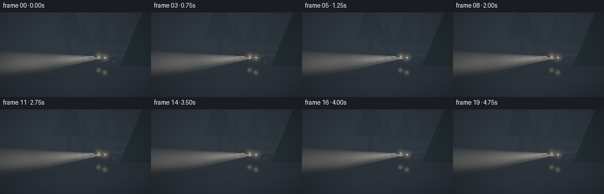
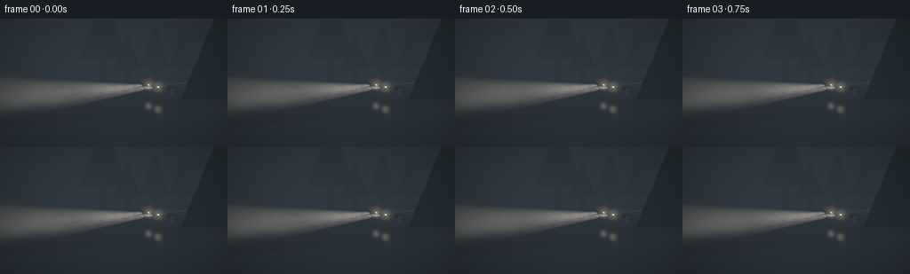

CODING AGENTS AS PIXEL WORLD MODELS
traex/GPT-6.1-Sol · phygen_051
点击播放 · 原生 RGB 像素
逐轮保存的候选
回放视频、检查图与代码变化。
每份候选均可单独播放。实际图片检查记录在下方工具轨迹中。
候选 01播放与检查图
点击播放 · 原生 RGB 像素


展开代码变化
--- 上一保存版本
+++ 本次保存版本
@@ -0,0 +1,229 @@
+"""Text-only, deterministic geometric rendering of headlights in moving dense fog."""
+from pathlib import Path
+import json
+import numpy as np
+from PIL import Image
+import artifact_io
+
+ROOT=Path(__file__).resolve().parent
+SPEC=json.loads((ROOT/'task_spec.json').read_text())
+W,H=SPEC['width']*2,SPEC['height']*2
+rng=np.random.default_rng(5107)
+cam=np.array([-1.,3.1,-13.])
+target=np.array([-1.,1.05,5.])
+fwd=target-cam; fwd/=np.linalg.norm(fwd)
+right=np.cross([0.,1.,0.],fwd); right/=np.linalg.norm(right)
+up=np.cross(fwd,right)
+focal=W/(2*np.tan(np.deg2rad(48)/2))
+xx,yy=np.meshgrid(np.arange(W)+.5,np.arange(H)+.5)
+rays=fwd+((xx-W/2)/focal)[...,None]*right+((H/2-yy)/focal)[...,None]*up
+rays/=np.linalg.norm(rays,axis=-1)[...,None]
+center=np.array([4.,0.,6.])
+front=np.array([-.925,0.,-.38]); front/=np.linalg.norm(front)
+side=np.array([-front[2],0.,front[0]])
+
+def world(u,y,v): return center+u*front+y*np.array([0,1,0])+v*side
+lamps=np.array([world(2.34,.79,v) for v in [-.65,.65]])
+beamdir=front+np.array([0,-.018,0]); beamdir/=np.linalg.norm(beamdir)
+
+# Smooth, advected, multiscale noise, with no frame-independent flicker.
+noise=rng.random((40,40,40)).astype(np.float32)
+def noise3(p,scale):
+ a=p*scale
+ q=np.floor(a).astype(np.int32); f=a-q; f=f*f*(3-2*f)
+ out=np.zeros(a.shape[:-1],np.float32)
+ for i in range(2):
+ for j in range(2):
+ for k in range(2):
+ wt=(f[...,0] if i else 1-f[...,0])*(f[...,1] if j else 1-f[...,1])*(f[...,2] if k else 1-f[...,2])
+ out+=wt*noise[(q[...,0]+i)%40,(q[...,1]+j)%40,(q[...,2]+k)%40]
+ return out
+
+def density(p,t):
+ drift=p+np.array([t*.43,t*.07,-t*.19])
+ low=noise3(drift,.32)
+ # Larger, floating banks, streaked slowly by a gentle crosswind.
+ fine=noise3(drift,.87)
+ height=np.exp(-np.maximum(p[...,1],0)/5.0)
+ return (.032+.045*height)*(0.48+1.10*low+.23*fine)
+
+# The light is localized in a real pair of diverging cones, not a screen overlay.
+def spot(p):
+ total=np.zeros(p.shape[:-1],np.float32)
+ for lamp in lamps:
+ delta=p-lamp
+ along=delta@beamdir
+ vert=delta[...,1]-along*beamdir[1]
+ lat=delta@side
+ spread=np.maximum(along,.03)
+ ang=(lat/(spread*.235))**2+(vert/(spread*.115))**2
+ cutoff=np.clip((1.18-ang)*4,0,1)
+ core=np.exp(-ang*2.5)
+ dist2=np.sum(delta*delta,axis=-1)
+ total+=(along>0)*cutoff*(.36+.64*core)*19/(1.5+dist2)*np.exp(-np.sqrt(dist2)*.031)
+ return total
+
+# Ground, a dim wet asphalt road and a muted verge.
+ground_t=-cam[1]/np.minimum(rays[...,1],-1e-5)
+hitground=rays[...,1]<-.0001
+depth=np.where(hitground,ground_t,75.)
+points=cam+rays*depth[...,None]
+rel=points-center
+lateral=rel@side
+road=np.abs(lateral)<4.4
+surface=np.zeros((H,W,3),np.float32)
+surface[:]=[.009,.013,.019]
+asphalt=.007+.0025*np.sin(points[...,0]*13+points[...,2]*7)*np.sin(points[...,2]*22)
+surface[road&hitground]=np.stack([asphalt*.8,asphalt*.95,asphalt*1.08],axis=-1)[road&hitground]
+# Worn pale edge and broken center paint are visible only in illuminated near-road areas.
+length=rel@front
+stripe=(np.abs(lateral+3.45)<.035)|(np.abs(lateral-3.45)<.035)
+centerstripe=(np.abs(lateral+.8)<.04)&((length%7)<3)
+reflect=np.where(stripe,.15,np.where(centerstripe,.11,.009))
+illum=spot(points)
+surface+=illum[...,None]*reflect[...,None]*np.array([1.,.9,.71])
+# Broad low-angle reflection on rain-darkened asphalt; not a mirror-like dry floor.
+for lamp in lamps:
+ virtual=lamp.copy(); virtual[1]*=-1
+ lv=virtual-cam; proj=rays@lv
+ distance=np.linalg.norm(np.cross(rays,lv),axis=-1)
+ sheen=np.exp(-(distance/.22)**2)*(proj>0)*hitground
+ surface+=sheen[...,None]*np.array([.28,.23,.15])
+surface[~hitground]=[.010,.016,.025]
+
+# A z-buffered triangle renderer for a real three-dimensional car and roadside silhouettes.
+def triangle(vertices,color):
+ verts=np.asarray(vertices,float)
+ v=verts-cam
+ z=v@fwd
+ if np.any(z<=.1): return
+ sx=W/2+(v@right)*focal/z; sy=H/2-(v@up)*focal/z
+ xmin=max(0,int(np.floor(sx.min()))); xmax=min(W-1,int(np.ceil(sx.max())))
+ ymin=max(0,int(np.floor(sy.min()))); ymax=min(H-1,int(np.ceil(sy.max())))
+ if xmax<xmin or ymax<ymin:return
+ x=xx[ymin:ymax+1,xmin:xmax+1]; y=yy[ymin:ymax+1,xmin:xmax+1]
+ den=(sy[1]-sy[2])*(sx[0]-sx[2])+(sx[2]-sx[1])*(sy[0]-sy[2])
+ if abs(den)<1e-8:return
+ a=((sy[1]-sy[2])*(x-sx[2])+(sx[2]-sx[1])*(y-sy[2]))/den
+ b=((sy[2]-sy[0])*(x-sx[2])+(sx[0]-sx[2])*(y-sy[2]))/den
+ c=1-a-b
+ inside=(a>=0)&(b>=0)&(c>=0)
+ zv=1/(a/z[0]+b/z[1]+c/z[2]+1e-12)
+ dv=zv/(rays[ymin:ymax+1,xmin:xmax+1]@fwd)
+ patch=depth[ymin:ymax+1,xmin:xmax+1]
+ update=inside&(dv<patch)
+ patch[update]=dv[update]
+ surface[ymin:ymax+1,xmin:xmax+1][update]=color
+
+def poly(vertices,color):
+ for i in range(1,len(vertices)-1):triangle([vertices[0],vertices[i],vertices[i+1]],color)
+def carpoly(coords,color):poly([world(*q) for q in coords],color)
+
+# Faint trees in the distance: their depths determine how dense fog hides them.
+for i in range(26):
+ u=rng.uniform(-38,32); v=rng.choice([-1,1])*rng.uniform(7,13)
+ bottom=world(u,0,v); height=rng.uniform(5,10)
+ width=rng.uniform(.2,.4)
+ poly([bottom+[-width,0,0],bottom+[width,0,0],bottom+[width,height,0],bottom+[-width,height,0]],[.006,.012,.015])
+ for layer in range(3):
+ ybase=height*(.30+layer*.17); rad=(height-ybase)*.38
+ poly([bottom+[-rad,ybase,0],bottom+[rad,ybase,0],bottom+[0,height,0]],[.005,.012,.014])
+# Roadside marker posts, quiet pale details.
+for u in [-12,-3,9,22]:
+ v=-4.55
+ carpoly([(u-.025,0,v),(u+.025,0,v),(u+.025,.65,v),(u-.025,.65,v)],[.10,.11,.105])
+ carpoly([(u-.026,.48,v-.001),(u+.026,.48,v-.001),(u+.026,.57,v-.001),(u-.026,.57,v-.001)],[.17,.15,.11])
+
+# Charcoal-blue sedan. Mesh stations create rounded/chamfered panel outlines.
+stations=[(2.30,.80,.84),(1.53,.90,1.0),(.55,.92,1.04),(-1.45,.89,1.03),(-2.22,.80,.91)]
+for (u1,v1,y1),(u2,v2,y2) in zip(stations[:-1],stations[1:]):
+ carpoly([(u1,y1,-v1),(u1,y1,v1),(u2,y2,v2),(u2,y2,-v2)],[.028,.040,.050])
+ for s in [-1,1]:
+ carpoly([(u1,.48,s*v1*.97),(u2,.48,s*v2*.97),(u2,y2-.09,s*v2),(u1,y1-.09,s*v1)],[.014,.022,.030] if s==1 else [.009,.016,.021])
+ carpoly([(u1,y1-.09,s*v1),(u2,y2-.09,s*v2),(u2,y2,s*(v2-.08)),(u1,y1,s*(v1-.08))],[.044,.057,.065])
+carpoly([(2.31,.45,-.77),(2.31,.45,.77),(2.31,.84,.80),(2.31,.84,-.80)],[.019,.024,.028])
+carpoly([(-2.23,.46,-.79),(-2.23,.91,-.8),(-2.23,.91,.8),(-2.23,.46,.79)],[.012,.018,.023])
+# Sloped glass, roof, side windows separated by slim B pillars.
+carpoly([(.65,1.05,-.80),(.65,1.05,.80),(-.12,1.62,.66),(-.12,1.62,-.66)],[.010,.024,.035])
+carpoly([(-.12,1.62,-.67),(-.12,1.62,.67),(-1.13,1.58,.66),(-1.13,1.58,-.66)],[.045,.057,.069])
+carpoly([(-1.13,1.58,-.66),(-1.13,1.58,.66),(-1.72,1.06,.80),(-1.72,1.06,-.80)],[.012,.024,.033])
+for s in [-1,1]:
+ carpoly([(.59,1.04,s*.85),(-.10,1.58,s*.69),(-1.12,1.55,s*.69),(-1.67,1.04,s*.85)],[.020,.031,.040])
+ carpoly([(.45,1.10,s*.845),(-.14,1.52,s*.709),(-.58,1.50,s*.713),(-.58,1.11,s*.841)],[.010,.020,.029])
+ carpoly([(-.67,1.11,s*.841),(-.67,1.50,s*.713),(-1.09,1.49,s*.714),(-1.53,1.11,s*.841)],[.008,.018,.024])
+ # Lower window rail and two inconspicuous brushed-metal handles.
+ carpoly([(.48,1.035,s*.869),(-1.62,1.035,s*.87),(-1.61,1.06,s*.86),(.47,1.06,s*.859)],[.067,.078,.086])
+ for u in [-.4,-1.23]:
+ carpoly([(u-.09,.94,s*.906),(u+.09,.94,s*.906),(u+.09,.96,s*.905),(u-.09,.96,s*.905)],[.071,.077,.078])
+ # Side mirror.
+ carpoly([(.44,1.10,s*.90),(.23,1.08,s*1.09),(.24,1.21,s*1.09),(.47,1.20,s*.89)],[.027,.035,.042])
+# Black grille and small slats in front bumper.
+carpoly([(2.322,.52,-.47),(2.322,.52,.47),(2.322,.70,.47),(2.322,.70,-.47)],[.0025,.004,.006])
+for y in [.55,.59,.63,.67]:
+ carpoly([(2.324,y,-.44),(2.324,y,.44),(2.324,y+.009,.44),(2.324,y+.009,-.44)],[.035,.040,.042])
+carpoly([(2.325,.44,-.73),(2.325,.44,.73),(2.325,.48,.73),(2.325,.48,-.73)],[.030,.035,.041])
+# Four cylinders with faceted tire walls and alloy rim spokes.
+for u in [-1.42,1.43]:
+ for s in [-1,1]:
+ n=28; r=.405; y=.43; v=s*.94
+ for j in range(n):
+ a=j*2*np.pi/n; b=(j+1)*2*np.pi/n
+ c=[(u+r*np.cos(a),y+r*np.sin(a),v),(u+r*np.cos(b),y+r*np.sin(b),v),(u+r*np.cos(b),y+r*np.sin(b),v-s*.19),(u+r*np.cos(a),y+r*np.sin(a),v-s*.19)]
+ carpoly(c,[.0035,.005,.007])
+ carpoly([(u+r*np.cos(j*2*np.pi/n),y+r*np.sin(j*2*np.pi/n),v+s*.004) for j in range(n)],[.004,.006,.008])
+ rr=.235
+ carpoly([(u+rr*np.cos(j*2*np.pi/n),y+rr*np.sin(j*2*np.pi/n),v+s*.008) for j in range(n)],[.041,.050,.058])
+ rr=.183
+ carpoly([(u+rr*np.cos(j*2*np.pi/n),y+rr*np.sin(j*2*np.pi/n),v+s*.01) for j in range(n)],[.008,.012,.018])
+ for j in range(5):
+ a=j*2*np.pi/5
+ carpoly([(u+.045*np.cos(a-.4),y+.045*np.sin(a-.4),v+s*.013),(u+.205*np.cos(a-.11),y+.205*np.sin(a-.11),v+s*.013),(u+.205*np.cos(a+.11),y+.205*np.sin(a+.11),v+s*.013),(u+.045*np.cos(a+.4),y+.045*np.sin(a+.4),v+s*.013)],[.075,.081,.082])
+# Clear warm-white headlamp housings at the origin of the two fog beams.
+for s in [-1,1]:
+ carpoly([(2.338,.70,s*.49),(2.338,.71,s*.80),(2.338,.85,s*.77),(2.338,.85,s*.47)],[.40,.38,.31])
+ carpoly([(2.345,.743,s*.51),(2.345,.75,s*.76),(2.345,.825,s*.74),(2.345,.824,s*.50)],[6.0,5.5,4.2])
+ carpoly([(-2.232,.74,s*.57),(-2.232,.74,s*.79),(-2.232,.83,s*.79),(-2.232,.83,s*.57)],[.20,.011,.004])
+
+# Store geometric scene once. Integrate its time-dependent participating medium.
+steps=86
+step=.54
+frames=[]
+for fi in range(SPEC['frames']):
+ t=fi/SPEC['fps']
+ trans=np.ones((H,W),np.float32)
+ rgb=np.zeros_like(surface)
+ for j in range(steps):
+ d=(j+.5)*step
+ active=np.clip((depth-(d-.5*step))/step,0,1)
+ if not np.any(active):break
+ p=cam+rays*d
+ rho=density(p,t)
+ alpha=1-np.exp(-rho*step*active)
+ # Light scattering by micron droplets reveals rays and billowing banks.
+ light=spot(p)
+ scatter=np.array([.021,.030,.041])+light[...,None]*np.array([2.65,2.49,2.10])
+ rgb+=trans[...,None]*alpha[...,None]*scatter
+ trans*=1-alpha
+ rgb+=trans[...,None]*surface
+ # Subtle optical glare at the headlights (bloom also on the visible near-road sheen).
+ from PIL import ImageFilter
+ bright=np.maximum(rgb-.22,0)
+ temp=Image.fromarray(np.uint8(np.clip(bright*.6,0,1)*255))
+ halo=np.asarray(temp.filter(ImageFilter.GaussianBlur(5)),dtype=np.float32)/255
+ rgb+=halo*.8
+ # Small luminous halos around actual source positions, fixed to the optics.
+ for lamp in lamps:
+ v=lamp-cam; z=v@fwd
+ sx=W/2+(v@right)*focal/z; sy=H/2-(v@up)*focal/z
+ rad2=(xx-sx)**2+(yy-sy)**2
+ rgb+=np.exp(-rad2/120)[...,None]*np.array([.070,.060,.039])
+ # A filmic shoulder keeps bright lamp cores white without flattening the cone.
+ rgb=1-np.exp(-rgb*1.32)
+ rgb=np.clip(rgb,0,1)**(1/2.2)
+ vignette=np.clip(1-.17*((xx-W/2)/(W/2))**2-.10*((yy-H/2)/(H/2))**2,.65,1)
+ rgb*=vignette[...,None]
+ img=Image.fromarray(np.uint8(np.clip(rgb*255,0,255))).resize((SPEC['width'],SPEC['height']),Image.Resampling.LANCZOS)
+ frames.append(np.asarray(img))
+ print(f'Rendered {fi+1}/{SPEC["frames"]}',flush=True)
+artifact_io.save(np.stack(frames),ROOT)
+print('Saved required RGB video artifacts.',flush=True)
可观测工具轨迹
实际执行的命令与返回图片。
命令 1exit 0
/bin/bash -lc "ls -la && cat prompt.txt && printf '\\n---RULES---\\n' && cat GENERATION_RULES.md && printf '\\n---SPEC---\\n' && cat task_spec.json"
命令 2exit 0
/bin/bash -lc "cat artifact_io.py && python - <<'PY'
import numpy,PIL
print('numpy',numpy.__version__)
PY"命令 3exit 0
/bin/bash -lc 'which ffmpeg || true; pwd'
命令 4exit 0
/bin/bash -lc "cat > generate.py <<'PY'
\"\"\"Text-only, deterministic geometric rendering of headlights in moving dense fog.\"\"\"
from pathlib import Path
import json
import numpy as np
from PIL import Image
import artifact_io
ROOT=Path(__file__).resolve().parent
SPEC=json.loads((ROOT/'task_spec.json').read_text())
W,H=SPEC['width']*2,SPEC['height']*2
rng=np.random.default_rng(5107)
cam=np.array([-1.,3.1,-13.])
target=np.array([-1.,1.05,5.])
fwd=target-cam; fwd/=np.linalg.norm(fwd)
right=np.cross([0.,1.,0.],fwd); right/=np.linalg.norm(right)
up=np.cross(fwd,right)
focal=W/(2*np.tan(np.deg2rad(48)/2))
xx,yy=np.meshgrid(np.arange(W)+.5,np.arange(H)+.5)
rays=fwd+((xx-W/2)/focal)[...,None]*right+((H/2-yy)/focal)[...,None]*up
rays/=np.linalg.norm(rays,axis=-1)[...,None]
center=np.array([4.,0.,6.])
front=np.array([-.925,0.,-.38]); front/=np.linalg.norm(front)
side=np.array([-front[2],0.,front[0]])
def world(u,y,v): return center+u*front+y*np.array([0,1,0])+v*side
lamps=np.array([world(2.34,.79,v) for v in [-.65,.65]])
beamdir=front+np.array([0,-.018,0]); beamdir/=np.linalg.norm(beamdir)
# Smooth, advected, multiscale noise, with no frame-independent flicker.
noise=rng.random((40,40,40)).astype(np.float32)
def noise3(p,scale):
a=p*scale
q=np.floor(a).astype(np.int32); f=a-q; f=f*f*(3-2*f)
out=np.zeros(a.shape[:-1],np.float32)
for i in range(2):
for j in range(2):
for k in range(2):
wt=(f[...,0] if i else 1-f[...,0])*(f[...,1] if j else 1-f[...,1])*(f[...,2] if k else 1-f[...,2])
out+=wt*noise[(q[...,0]+i)%40,(q[...,1]+j)%40,(q[...,2]+k)%40]
return out
def density(p,t):
drift=p+np.array([t*.43,t*.07,-t*.19])
low=noise3(drift,.32)
# Larger, floating banks, streaked slowly by a gentle crosswind.
fine=noise3(drift,.87)
height=np.exp(-np.maximum(p[...,1],0)/5.0)
return (.032+.045*height)*(0.48+1.10*low+.23*fine)
# The light is localized in a real pair of diverging cones, not a screen overlay.
def spot(p):
total=np.zeros(p.shape[:-1],np.float32)
for lamp in lamps:
delta=p-lamp
along=delta@beamdir
vert=delta[...,1]-along*beamdir[1]
lat=delta@side
spread=np.maximum(along,.03)
ang=(lat/(spread*.235))**2+(vert/(spread*.115))**2
cutoff=np.clip((1.18-ang)*4,0,1)
core=np.exp(-ang*2.5)
dist2=np.sum(delta*delta,axis=-1)
total+=(along>0)*cutoff*(.36+.64*core)*19/(1.5+dist2)*np.exp(-np.sqrt(dist2)*.031)
return total
# Ground, a dim wet asphalt road and a muted verge.
ground_t=-cam[1]/np.minimum(rays[...,1],-1e-5)
hitground=rays[...,1]<-.0001
depth=np.where(hitground,ground_t,75.)
points=cam+rays*depth[...,None]
rel=points-center
lateral=rel@side
road=np.abs(lateral)<4.4
surface=np.zeros((H,W,3),np.float32)
surface[:]=[.009,.013,.019]
asphalt=.007+.0025*np.sin(points[...,0]*13+points[...,2]*7)*np.sin(points[...,2]*22)
surface[road&hitground]=np.stack([asphalt*.8,asphalt*.95,asphalt*1.08],axis=-1)[road&hitground]
# Worn pale edge and broken center paint are visible only in illuminated near-road areas.
length=rel@front
stripe=(np.abs(lateral+3.45)<.035)|(np.abs(lateral-3.45)<.035)
centerstripe=(np.abs(lateral+.8)<.04)&((length%7)<3)
reflect=np.where(stripe,.15,np.where(centerstripe,.11,.009))
illum=spot(points)
surface+=illum[...,None]*reflect[...,None]*np.array([1.,.9,.71])
# Broad low-angle reflection on rain-darkened asphalt; not a mirror-like dry floor.
for lamp in lamps:
virtual=lamp.copy(); virtual[1]*=-1
lv=virtual-cam; proj=rays@lv
distance=np.linalg.norm(np.cross(rays,lv),axis=-1)
sheen=np.exp(-(distance/.22)**2)*(proj>0)*hitground
surface+=sheen[...,None]*np.array([.28,.23,.15])
surface[~hitground]=[.010,.016,.025]
# A z-buffered triangle renderer for a real three-dimensional car and roadside silhouettes.
def triangle(vertices,color):
verts=np.asarray(vertices,float)
v=verts-cam
z=v@fwd
if np.any(z<=.1): return
sx=W/2+(v@right)*focal/z; sy=H/2-(v@up)*focal/z
xmin=max(0,int(np.floor(sx.min()))); xmax=min(W-1,int(np.ceil(sx.max())))
ymin=max(0,int(np.floor(sy.min()))); ymax=min(H-1,int(np.ceil(sy.max())))
if xmax<xmin or ymax<ymin:return
x=xx[ymin:ymax+1,xmin:xmax+1]; y=yy[ymin:ymax+1,xmin:xmax+1]
den=(sy[1]-sy[2])*(sx[0]-sx[2])+(sx[2]-sx[1])*(sy[0]-sy[2])
if abs(den)<1e-8:return
a=((sy[1]-sy[2])*(x-sx[2])+(sx[2]-sx[1])*(y-sy[2]))/den
b=((sy[2]-sy[0])*(x-sx[2])+(sx[0]-sx[2])*(y-sy[2]))/den
c=1-a-b
inside=(a>=0)&(b>=0)&(c>=0)
zv=1/(a/z[0]+b/z[1]+c/z[2]+1e-12)
dv=zv/(rays[ymin:ymax+1,xmin:xmax+1]@fwd)
patch=depth[ymin:ymax+1,xmin:xmax+1]
update=inside&(dv<patch)
patch[update]=dv[update]
surface[ymin:ymax+1,xmin:xmax+1][update]=color
def poly(vertices,color):
for i in range(1,len(vertices)-1):triangle([vertices[0],vertices[i],vertices[i+1]],color)
def carpoly(coords,color):poly([world(*q) for q in coords],color)
# Faint trees in the distance: their depths determine how dense fog hides them.
for i in range(26):
u=rng.uniform(-38,32); v=rng.choice([-1,1])*rng.uniform(7,13)
bottom=world(u,0,v); height=rng.uniform(5,10)
width=rng.uniform(.2,.4)
poly([bottom+[-width,0,0],bottom+[width,0,0],bottom+[width,height,0],bottom+[-width,height,0]],[.006,.012,.015])
for layer in range(3):
ybase=height*(.30+layer*.17); rad=(height-ybase)*.38
poly([bottom+[-rad,ybase,0],bottom+[rad,ybase,0],bottom+[0,height,0]],[.005,.012,.014])
# Roadside marker posts, quiet pale details.
for u in [-12,-3,9,22]:
v=-4.55
carpoly([(u-.025,0,v),(u+.025,0,v),(u+.025,.65,v),(u-.025,.65,v)],[.10,.11,.105])
carpoly([(u-.026,.48,v-.001),(u+.026,.48,v-.001),(u+.026,.57,v-.001),(u-.026,.57,v-.001)],[.17,.15,.11])
# Charcoal-blue sedan. Mesh stations create rounded/chamfered panel outlines.
stations=[(2.30,.80,.84),(1.53,.90,1.0),(.55,.92,1.04),(-1.45,.89,1.03),(-2.22,.80,.91)]
for (u1,v1,y1),(u2,v2,y2) in zip(stations[:-1],stations[1:]):
carpoly([(u1,y1,-v1),(u1,y1,v1),(u2,y2,v2),(u2,y2,-v2)],[.028,.040,.050])
for s in [-1,1]:
carpoly([(u1,.48,s*v1*.97),(u2,.48,s*v2*.97),(u2,y2-.09,s*v2),(u1,y1-.09,s*v1)],[.014,.022,.030] if s==1 else [.009,.016,.021])
carpoly([(u1,y1-.09,s*v1),(u2,y2-.09,s*v2),(u2,y2,s*(v2-.08)),(u1,y1,s*(v1-.08))],[.044,.057,.065])
carpoly([(2.31,.45,-.77),(2.31,.45,.77),(2.31,.84,.80),(2.31,.84,-.80)],[.019,.024,.028])
carpoly([(-2.23,.46,-.79),(-2.23,.91,-.8),(-2.23,.91,.8),(-2.23,.46,.79)],[.012,.018,.023])
# Sloped glass, roof, side windows separated by slim B pillars.
carpoly([(.65,1.05,-.80),(.65,1.05,.80),(-.12,1.62,.66),(-.12,1.62,-.66)],[.010,.024,.035])
carpoly([(-.12,1.62,-.67),(-.12,1.62,.67),(-1.13,1.58,.66),(-1.13,1.58,-.66)],[.045,.057,.069])
carpoly([(-1.13,1.58,-.66),(-1.13,1.58,.66),(-1.72,1.06,.80),(-1.72,1.06,-.80)],[.012,.024,.033])
for s in [-1,1]:
carpoly([(.59,1.04,s*.85),(-.10,1.58,s*.69),(-1.12,1.55,s*.69),(-1.67,1.04,s*.85)],[.020,.031,.040])
carpoly([(.45,1.10,s*.845),(-.14,1.52,s*.709),(-.58,1.50,s*.713),(-.58,1.11,s*.841)],[.010,.020,.029])
carpoly([(-.67,1.11,s*.841),(-.67,1.50,s*.713),(-1.09,1.49,s*.714),(-1.53,1.11,s*.841)],[.008,.018,.024])
# Lower window rail and two inconspicuous brushed-metal handles.
carpoly([(.48,1.035,s*.869),(-1.62,1.035,s*.87),(-1.61,1.06,s*.86),(.47,1.06,s*.859)],[.067,.078,.086])
for u in [-.4,-1.23]:
carpoly([(u-.09,.94,s*.906),(u+.09,.94,s*.906),(u+.09,.96,s*.905),(u-.09,.96,s*.905)],[.071,.077,.078])
# Side mirror.
carpoly([(.44,1.10,s*.90),(.23,1.08,s*1.09),(.24,1.21,s*1.09),(.47,1.20,s*.89)],[.027,.035,.042])
# Black grille and small slats in front bumper.
carpoly([(2.322,.52,-.47),(2.322,.52,.47),(2.322,.70,.47),(2.322,.70,-.47)],[.0025,.004,.006])
for y in [.55,.59,.63,.67]:
carpoly([(2.324,y,-.44),(2.324,y,.44),(2.324,y+.009,.44),(2.324,y+.009,-.44)],[.035,.040,.042])
carpoly([(2.325,.44,-.73),(2.325,.44,.73),(2.325,.48,.73),(2.325,.48,-.73)],[.030,.035,.041])
# Four cylinders with faceted tire walls and alloy rim spokes.
for u in [-1.42,1.43]:
for s in [-1,1]:
n=28; r=.405; y=.43; v=s*.94
for j in range(n):
a=j*2*np.pi/n; b=(j+1)*2*np.pi/n
c=[(u+r*np.cos(a),y+r*np.sin(a),v),(u+r*np.cos(b),y+r*np.sin(b),v),(u+r*np.cos(b),y+r*np.sin(b),v-s*.19),(u+r*np.cos(a),y+r*np.sin(a),v-s*.19)]
carpoly(c,[.0035,.005,.007])
carpoly([(u+r*np.cos(j*2*np.pi/n),y+r*np.sin(j*2*np.pi/n),v+s*.004) for j in range(n)],[.004,.006,.008])
rr=.235
carpoly([(u+rr*np.cos(j*2*np.pi/n),y+rr*np.sin(j*2*np.pi/n),v+s*.008) for j in range(n)],[.041,.050,.058])
rr=.183
carpoly([(u+rr*np.cos(j*2*np.pi/n),y+rr*np.sin(j*2*np.pi/n),v+s*.01) for j in range(n)],[.008,.012,.018])
for j in range(5):
a=j*2*np.pi/5
carpoly([(u+.045*np.cos(a-.4),y+.045*np.sin(a-.4),v+s*.013),(u+.205*np.cos(a-.11),y+.205*np.sin(a-.11),v+s*.013),(u+.205*np.cos(a+.11),y+.205*np.sin(a+.11),v+s*.013),(u+.045*np.cos(a+.4),y+.045*np.sin(a+.4),v+s*.013)],[.075,.081,.082])
# Clear warm-white headlamp housings at the origin of the two fog beams.
for s in [-1,1]:
carpoly([(2.338,.70,s*.49),(2.338,.71,s*.80),(2.338,.85,s*.77),(2.338,.85,s*.47)],[.40,.38,.31])
carpoly([(2.345,.743,s*.51),(2.345,.75,s*.76),(2.345,.825,s*.74),(2.345,.824,s*.50)],[6.0,5.5,4.2])
carpoly([(-2.232,.74,s*.57),(-2.232,.74,s*.79),(-2.232,.83,s*.79),(-2.232,.83,s*.57)],[.20,.011,.004])
# Store geometric scene once. Integrate its time-dependent participating medium.
steps=86
step=.54
frames=[]
for fi in range(SPEC['frames']):
t=fi/SPEC['fps']
trans=np.ones((H,W),np.float32)
rgb=np.zeros_like(surface)
for j in range(steps):
d=(j+.5)*step
active=np.clip((depth-(d-.5*step))/step,0,1)
if not np.any(active):break
p=cam+rays*d
rho=density(p,t)
alpha=1-np.exp(-rho*step*active)
# Light scattering by micron droplets reveals rays and billowing banks.
light=spot(p)
scatter=np.array([.021,.030,.041])+light[...,None]*np.array([2.65,2.49,2.10])
rgb+=trans[...,None]*alpha[...,None]*scatter
trans*=1-alpha
rgb+=trans[...,None]*surface
# Subtle optical glare at the headlights (bloom also on the visible near-road sheen).
from PIL import ImageFilter
bright=np.maximum(rgb-.22,0)
temp=Image.fromarray(np.uint8(np.clip(bright*.6,0,1)*255))
halo=np.asarray(temp.filter(ImageFilter.GaussianBlur(5)),dtype=np.float32)/255
rgb+=halo*.8
# Small luminous halos around actual source positions, fixed to the optics.
for lamp in lamps:
v=lamp-cam; z=v@fwd
sx=W/2+(v@right)*focal/z; sy=H/2-(v@up)*focal/z
rad2=(xx-sx)**2+(yy-sy)**2
rgb+=np.exp(-rad2/120)[...,None]*np.array([.070,.060,.039])
# A filmic shoulder keeps bright lamp cores white without flattening the cone.
rgb=1-np.exp(-rgb*1.32)
rgb=np.clip(rgb,0,1)**(1/2.2)
vignette=np.clip(1-.17*((xx-W/2)/(W/2))**2-.10*((yy-H/2)/(H/2))**2,.65,1)
rgb*=vignette[...,None]
img=Image.fromarray(np.uint8(np.clip(rgb*255,0,255))).resize((SPEC['width'],SPEC['height']),Image.Resampling.LANCZOS)
frames.append(np.asarray(img))
print(f'Rendered {fi+1}/{SPEC[\"frames\"]}',flush=True)
artifact_io.save(np.stack(frames),ROOT)
print('Saved required RGB video artifacts.',flush=True)
PY
OPENBLAS_NUM_THREADS=1 python generate.py"命令 5exit 0
/bin/bash -lc "python - <<'PY'
from pathlib import Path
import numpy as np
from PIL import Image
p=Path('.')
a=np.load(p/'pixels.npz')['pixels']
images=np.stack([np.asarray(Image.open(p/'frames'/f'{i:02d}.png')) for i in range(20)])
print('Packed video:',a.shape,a.dtype)
print('RGB frames:',images.shape,images.dtype)
print('Temporal mean change:',np.abs(np.diff(images.astype(float),axis=0)).mean())
for name in ['generate.py','pixels.npz','index.html','inspection.png','transition_check.png']:
print(name,(p/name).stat().st_size,'bytes')
assert images.shape==(20,144,256,3)
assert a.shape==(144,256,20)
PY"保存候选 1 份；完成命令 5 次；可验证图片返回 0 张。原始 API 响应与完整日志保留在本地。